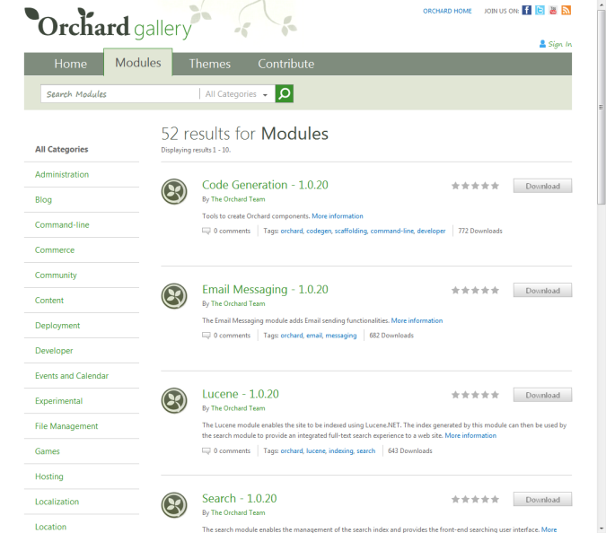
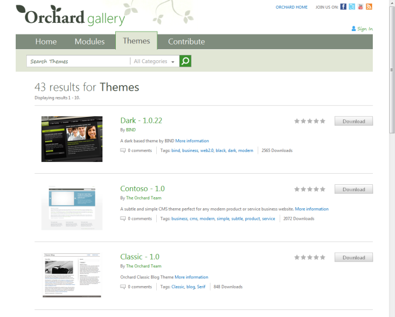

The Orchard Gallery web site allows you to browse and search for available modules and themes to extend and customize the behavior of any Orchard site. It also provides a convenient way for developers and designers to upload and share modules and themes with others.
You can also browse modules and themes from the gallery using the Orchard admin panel. Refer to Installing modules and themes from the gallery for more information.
To view the gallery website, navigate to http://gallery.orchardproject.net/ in your browser.

On the Modules tab of the website, you can browse and search for available modules.

Modules are categorized, so you can quickly find what you are looking for by clicking any category link or selecting from the category dropdown next to the search input box.

The Themes tab displays a list of themes, similar to the modules section. Unlike modules, themes are not categorized. However, both modules and themes support tags that can be specified by the author/submitter, and you can click any tag link on the site to find other items that share that tag.

You can search for available themes or modules by typing keywords in the search input box. For modules, you can also search within a specific category or across all categories.

Each module or theme in the gallery has a details page that displays more information about the package, such as screenshots, the package version, number of downloads, license information, or a project site where you can learn more. There is a Report Abuse link on every details page that you can use to contact the gallery administrator to report inappropriate content or malware. Please use this for abuse reports only. If you want to report a bug or issue to the package author, please use the Project Site link instead.

Note that a few key gallery features are remaining to implement, and those will be available on the website as soon as they are ready. See "About the Orchard Gallery Project" below for more information
Multiple Versions of the Same Package
Currently, each version of a package (module or theme) is listed as a unique entry in the web site, which can make it somewhat difficult to know whether you are downloading the most recent version.

We have plans to address this in a future update to the gallery website (see "About the Orchard Gallery Project" below). For now, we recommend that you search for the name of the package (without the version number) in order to list all versions of a given package before selecting one to download.
About the Orchard Gallery Project
The gallery website (and related feed) implementation are being developed as an open source project under the same New BSD license and contribution terms as Orchard itself, and the source code is available to you on OrchardGallery.CodePlex.com and GalleryServer.CodePlex.com). The open source gallery project is meant to provide a reference implementation for exposing a gallery feed and website, and can be used to set up your own gallery site. For example, the NuGet.org website uses this gallery implementation too.
The gallery project is a work-in-progress, and there are a number of improvements we will be making to the gallery over time. In the near future, we are planning to implement these features:
- Reviews and ratings
- Collapse all versions of a package under a single details page
- Display aggregate rating and download stats across all versions of a package
- Better management and submission interface for package submitters
If you want to log a bug (or submit a patch) for the gallery website, or if you have a great feature suggestion we should consider, please post it to OrchardGallery.CodePlex.com.